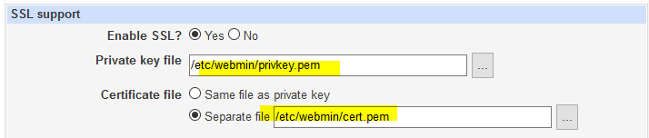

DEBIAN 12 BOOKWORM
STABLE
Para andar con ojo en las actualizaciones instalar
aptitude install apt-listbugs
- Repositories
nano /etc/apt/sources.list
## Debian stable
deb https://deb.debian.org/debian/ bookworm main contrib non-free
non-free-firmware
## Debian security
deb https://deb.debian.org/debian-security bookworm-security non-free
contrib main non-free-firmware
## Debian updates
deb https://deb.debian.org/debian/ bookworm-updates non-free contrib main
non-free-firmware
## Debian backports
#deb https://deb.debian.org/debian/ bookworm-backports main contrib
#non-free non-free-firmware
## Insync
deb https://apt.insync.io/debian bookworm non-free contrib
## NodeSource
#deb [signed-by=/etc/apt/keyrings/nodesource.gpg]
#https://deb.nodesource.com/ node_20.x nodistro main
## Debian Multimedia
#deb http://www.deb-multimedia.org/ bookworm main non-free
# Chrome
deb [arch=amd64] http://dl.google.com/linux/chrome/deb/ stable main
# Teamviewer
#deb [signed-by=/usr/share/keyrings/teamviewer-keyring.gpg]
#https://linux.teamviewer.com/deb stable main
apt install aptitude htop smartmontools sshpass rsync curl wget nano apt-transport-https iperf zip arc arj bzip2 cabextract lzop nomarch p7zip p7zip-full pax tnef unrar-free unzip unrar deborphan net-tools intel-microcode hdparm ncdu rename iftop dns9utils nethogs tcptrack dnsutils
curl -fsSL https://deb.nodesource.com/gpgkey/nodesource-repo.gpg.key | gpg --dearmor -o /etc/apt/keyrings/nodesource.gpg
Para instalar Dropbox
COMMANDS
- Add font
fc-cache -f -v - tras haber copiado la fuente a /usr/share/fonts
- gpg
gpg -c file.txt - cifra a archivo binario
gpg -ca file.txt - cifra a archivo de texto
gpg --output output.txt -d file.(gpg or txt) - para descifrar
// convertir directorio en un archivo
tar czf myfiles.tar.gz mydirectory/
// convertir archivo a un directorio
tar xzf myfiles.tar.gz
echo RELOADAGENT | gpg-connect-agent
- para eliminar de la memoria la clave y que la pida al descomprimir
- grep
Eliminar todas las lineas de una fichero que contienen un determinado 'texto'
cat nombreArchivo | grep -v 'texto' > nuevoArchivo
Coger solo las lineas de un archivo que contienen un determinado 'texto'
grep -i "texto" nombreArchivo
- zip
zip -er zipName.zip path/to/folder/ - Comprimir carpeta con contraseña
- dpkg
dpkg -i package.deb -
apt-get -f install - reparar dependencias incumplidas si las hay
dpkg -r onlyThaName - desinstalar
debconf-show nombrePaquete - muestra configuracion del paquete instalado
dpkg-reconfigure nombrePaquete - para reconfigurar el paquete
- Tamaño de ficheros y carpetas
ls -lh
du -ah /path
du -h -d1 | sort -h Lista de directorios (ocultos incluidos) con su tamaño
df -h
du -sh * Lista de directorios (no ocultos) con su tamaño
apt install ncdu
ncdu
- Dividir archivo en varios
Dividir archivo en trozos de 200mb asegurandoes que el corte no se produce en medio de una linea
split -C 200m archivo.txt
- Limpieza
apt-get autoclean && apt-get autoremove &&
apt-get remove --purge `deborphan`
dpkg -l | grep -v ^ii | awk '{print $2}' | sed '1,5d'|xargs
dpkg --purge
Ver el tamaño de los logs y limpiar todos excepto los ultimos 3 dias
journalctl --disk-usage
journalctl --vacuum-time=3d
Limpiar caches de imagenes
du -sh ~/.cache/thumbnails
rm -rf ~/.cache/thumbnails/*
- Process
pgrep processName - buscar proceso
ps - listar todos los procesos
kill processNumber - matar proceso
fg - continuar el proceso que estaba detenido
nohup comando & - Ejecuta un comando en segundo plano y sigue ejecutandolo aunque salgamos de esa terminal
- ulimits
lsof - para encontrar file descriptors usados
lsof -p PID | wc -l - indica cuantos file descriptors (archivos u otros recursos como conexiones http) tiene abiertos el proceso PID
lsof -c PROCESS-NAME | wc -l - igual que arriba pero por nombre
ulimit -n - muestra el limite de fd que el usuario puede usar
ulimit -n 4096 - sube ese limite por ejemplo lo normal es 1024 a 4096 pero solo para esa sesion
// Para Hacerlo permamente
nano /etc/security/limits.conf
userName soft nofile 2000
* hard nofile 500000
* soft nofile 500000
root hard nofile 500000
root soft nofile 500000
// Cambiar el limite de fd de un proceso en ejecucion
prlimit --pid pidID --nofile=soft:hard
prlimit --pid XXXX --nofile=XXXX:XXXX
en nginx
user www-data;
worker_processes 4;
pid /run/nginx.pid;
worker_rlimit_nofile 50000;
events {
worker_connections 4000;
# multi_accept on;
}
Incrementar limites
-> Por usuario
nano /etc/security/limits.conf
Añadir al final
* hard nofile 500000
* soft nofile 500000
root hard nofile 500000
root soft nofile 500000
Guardar el archivo y hacer logout y login de nuevo
Si esto no funciona probar con pam-limits
nano /etc/pam.d/common-session
añadir
session required pam_limits.so
-> Para Todo el Sistema
nano /etc/sysctl.conf
añadir
fs.file-max = 2097152
Salimos y ejecutamos
sysctl -p
-> Verificar que funcionan los nuevos limites
cat /proc/sys/fs/file-max
Hard Limit
ulimit -Hn
Soft Limit
ulimit -Sn
verificar para un usuario
su - nombreUsuario -c 'ulimit -aHS' -s '/bin/bash'
Verificar para un proceso en ejecucion
conseguimos el PID
ps aux | grep nombreDelProceso
cat /proc/XXX/limits
- Buscar
find /path -name fileName - Buscar archivo
find /path -type d -name dirName - Buscar carpeta
- Crear nuevo usuario
useradd -d /home/username -m -s /bin/bash username - Crea un usuario con su carpeta home y consola para usar
passwd username - Para crear la contraseña del usuario
- Zona horaria
dpkg-reconfigure tzdata - reconfigurar la zona horaria
- cpulimit
apt-get install cpulimit
ps aux | grep nombreProceso - nos da el id del proceso
cpulimit -p id -l 30 - limita el proceso id al 30%
cpulimit -e nombreProceso -l 50 - limita el proceso nombreProceso al 50%
Añadir & para recuperar el control de la consola
- averiguar la version de debian
lsb_release -a
- dns
dig domain.tld @9.9.9.9
- cron
crontab -e
// activar los logs de cron
nano /etc/rsyslog.conf
// descomentar la linea
#cron.* -/var/log/cron
service rsyslog restart
// ejecutar algo al inicio del servidor
crontab -e // como root
@reboot cd /home/user/donde-sea && ./programa
- nmap
nmap -Pn X.X.X.X || hostname
- rename multiple files at once
apt install rename
// Reemplazar la 1 ocurrencia de abc por xyz
rename 's/abc/xyz/' *
- curl
// tiempo en ir, procesar y volver
curl -o /dev/null -s -w 'Total: %{time_total}s\n' https://pagina.web
SECURITY
SSH
aptitude install openssh-server openssh-client
nano /etc/ssh/sshd_config
// Para quitar acceso como root
# Authentication:
LoginGraceTime 120
PermitRootLogin without-password // jode mas que poner solo no
StrictModes yes
// Por seguridad
# Para permitir contraseñas vacias pon yes (NI SE TE OCURRA HACERLO)
PermitEmptyPasswords no
service ssh restart
sshpass -p contraseña ssh usuario@dominio
- Broken pipe
Para prevenir desconexiones del tipo broken pipe
nano -c /etc/ssh/ssh_config
Host *
ServerAliveInterval 120
CLAMAV
Antivirus para asegurarnos de que no somos conductores de virus entre maquinas windows y por si las moscas ...
apt-get install clamav clamav-docs clamav-daemon clamav-freshclam
aptitude install arc arj bzip2 cabextract lzop nomarch p7zip pax tnef unrar-free unzip zoo lha unrar - Para que escanee archivos comprimidos
nano /etc/clamav/freshclam.conf - El archivo de configuracion por si queremos cambiar algo.
service clamav-freshclam restart - hacerlo despues para cargar la nueva configuracion
// Para actualizar, como root
freshclam
// Si esta bloqueado
/etc/init.d/clamav-freshclam stop
//despues =>
service clamav-freshclam start
// para escanear como usuario normal
clamscan -r /ruta/a/escanear
RKHUNTER
aptitude install rkhunter
//para actualizar, como root
rkhunter --propupd
rkhunter --update
//para usar, como root tambien
rkhunter --check
FAIL2BAN
apt-get install fail2ban whois
cp /etc/fail2ban/jail.conf /etc/fail2ban/jail.local
nano /etc/fail2ban/jail.local
// Aqui van las IPs que no tendran esas restricciones
[DEFAULT]
# "ignoreip" can be an IP address, a CIDR mask or a DNS host
ignoreip = 127.0.0.1 192.168.1.0/24
bantime = 1800
maxretry = 3
// Correo al que avisar ante sucesos
# Destination email address used solely for the interpolations in
# jail.{conf,local} configuration files.
destemail = root@localhost
[webmin]
enabled = true
port = 10000
filter = webmin-auth
banaction = iptables-multiport
action = %(action_mwl)s
logpath = /var/log/auth.log
maxretry = 3
[ssh]
enabled = true
port = ssh
filter = sshd
logpath = /var/log/auth.log
maxretry = 3
[ssh-ddos]
enabled = true
port = ssh
filter = sshd-ddos
logpath = /var/log/auth.log
maxretry = 3
service fail2ban restart
service fail2ban status
Los logs de baneos estan en estos dos archivos
/var/log/fail2ban.log
/var/log/auth.log
- manual unban
fail2ban-client set ssh unbanip X.X.X.X
UFW
apt-get install ufw
ufw allow ssh/tcp
ufw logging on
Antes de esto no se podia activar porque nos echa de la sesion de SSH.
Ahora si => ufw enable
ufw allow smtp/tcp
ufw allow http/tcp
ufw allow https/tcp
ufw allow webmin
ufw status - rules list
ufw status numbered - numbered rules list
ufw delete X - delete rule X
- bloquear IPs
ufw insert 1 deny from X.X.X.X to any
nano -c /etc/ufw/before.rules
# End required lines
-A ufw-before-input -s X.X.X.X -j DROP
ufw reload
PM2
- Instalar
npm install pm2 -g
npm remove pm2 -g
- Configuracion
pm2 startup - como usuario y seguir instrucciones para hacer que pm2 se ejecute en los reinicios sin necesitar ser root
pm2 unstartup - para desmontar el chiringuito
NO SIEMPRE Para ejecutar los procesos como user y no como root
chmod -R 777 /home/user/.pm2
- Comandos
pm2 start app.js
pm2 kill // para la ejecucion pero con un reboot se activara de nuevo
pm2 list
pm2 stop all|number
pm2 restart all|number
pm2 delete 7 // elimina el proceso especifico con ese id
pm2 save // salva la lista de procesos en ese momento
pm2 start app.js --name "my-name"
pm2 restart app --name "nuevo-nombre" --update-env // para renombrar
pm2 reset app // pone el contador de restarts a cero
- dev
pm2-dev start app.js
pm2-dev start app.js --ignore folder1,folder2,file3.txt
- cluster variables
// -i numero de procesos que levanta
pm2 start name.js -i max
process.env.NODE_APP_INSTANCE;
process.env.name
process.env.pm_id
- max-memory-restart
pm2 start geoip.js -i max --max-memory-restart 1300M
50M
50K
1G
- scale
// Sumar 3 procesos al actual
pm2 scale app +3
// deja 3 procesos activos de todos los que este usando actualmente
pm2 scale app 3
- cluster logs in the same file
// ecosystem.config.js
module.exports = {
apps: [{
name: 'codetabs',
script: 'codetabs.js',
ignore_watch: ["node_modules", "tmp"],
output: './../logs/hits.log',
error: './../logs/errors.log',
env: {
NODE_ENV: "development",
},
env_production: {
NODE_ENV: "production",
},
instances: 8,
max_memory_restart: "1G",
merge_logs: true,
log_date_format: 'YYYY-MM-DD HH:mm:ss',
}]
};
pm2 start ecosystem.config.js --env production
NPM sin ser ROOT
Como instalar paquetes npm globalmente sin ser root
// crear carpeta para los paquetes globales
mkdir "${HOME}/.npm-packages"
// crear .npmrc
nano ${HOME}/.npmrc
prefix=${HOME}/.npm-packages
//editar .bashrc
nano ${HOME}/.bashrc
NPM_PACKAGES="${HOME}/.npm-packages"
PATH="$NPM_PACKAGES/bin:$PATH"
unset MANPATH # delete if already modified MANPATH elsewhere
export MANPATH="$NPM_PACKAGES/share/man:$(manpath)"
// recargar la configuracion para aplicar los cambios
source ~/.profile
SYSTEMD
systemctl status servidorGO - nos da informacion del servicion
- Crear Servicio
nano /etc/systemd/servidorGO.service
cp servidorGO.service /etc/systemd/system
systemctl enable servidorGO.service
service servidorGO.service start
- Borrar servicio
systemctl stop [servicename]
systemctl disable [servicename]
rm /etc/systemd/system/[servicename]
systemctl daemon-reload
systemctl reset-failed
- nombre.service
[Unit]
Description= Descripcion de la tarea
[Service]
User=user
Group=www-data
Restart=on-failure
WorkingDirectory=/var/www/path/to/binary/folder
ExecStart=/var/www/path/to/binary/folder/binaryName
[Install]
WantedBy=multi-user.target
- Commandos
service name status
service name start
systemctl enable name.service
systemctl disable name.service
systemctl start name.service
systemctl stop name.service
systemctl restart name.service
systemctl status name.service
systemctl reload name.service
// Required files
/etc/systemd/servidorGO.service
/etc/systemd/system/servidorGO.service
/etc/systemd/system/multi-user.target.wants/servidorGO.service
/sys/fs/cgroup/systemd/system.slice/servidorGO.service
- Otra opcion ?
nano /lib/systemd/system/name.service
[Unit]
Description= Task description
[Service]
Type=simple
Restart=always
RestartSec=5s
ExecStart=/var/www/path/to/binary/folder/binaryName
[Install]
WantedBy=multi-user.target
service name start
service name status
// para activarlo desde el reinicio del sistema
systemctl enable name.service
SYSTEMD sin ser ROOT
Primero asegurarnos de que este instalado dbus para user
apt install dbus-user-session
apt install policykit-1 por si da guerra org.freedesktop.policytoolkit1
Creamos carpeta donde guardar los servicios
mkdir -p ~/.config/systemd/user
En esa carpeta creamos el nombreservicio.service
[Unit]
Description= Descripcion de la tarea
[Service]
RestartSec=5s
Restart=always
WorkingDirectory=/ruta/a/la/carpeta/del/binario
ExecStart=/ruta/a/la/carpeta/del/binario/./nombreDelBinario
[Install]
WantedBy=default.target
Ahora hacemos que systemd reconozca los cambios
systemctl --user daemon-reload
Ya podemos gestionar el servicio
systemctl --user start nombreDelServicio
systemctl --user stop nombreDelServicio
systemctl --user restart nombreDelServicio
systemctl --user status nombreDelServicio
Para que el servicio se inicie automaticamente cuando el usuario se loguea
systemctl --user enable nombreDelServicio // sin el .service al final
Para desactivarlo
systemctl --user disable nombreDelServicio
Hay que hacer que el servicio corra siempre, este o no logueado el dueño y al inicio del sistema. Para ello como root ejecutamos
loginctl enable-linger NOMBREUSUARIO
Ya como usuario normal podemos ver el estado de los servicios
loginctl user-status NOMBREUSUARIO
NGINX
- Instalacion
apt-get install nginx
chown -R user:user /var/www - Para darle permisos al usuario para toda esa carpeta
mkdir -p /var/www/site1
mkdir -p /var/www/site2
Configuracion
nano /etc/nginx/nginx.conf
El archivo de configuracion se llama default y esta en la carpeta /etc/nginx/sites-available .Lo borramos o lo renombramos a default.old. La copia de default que esta en /etc/nginx/sites-enabled hay que borrarla
Ahora podemos crear nuestro archivo/s de configuracion.
nano /etc/nginx/sites-available/domain
cp /etc/nginx/sites-available/domain /etc/nginx/sites-enabled/domain
service nginx restart
nginx -s reload solo para recargar el archivo de configuracion
server-side-includes
Server Side Includes
Directivas y variables
ssi on - /etc/nginx/sites-available
Para las rutas ojo porque es desde la raiz del servidor web nginx para esa location
<!-- Head -->
<!--#include file="/_public/templates/head.html" -->
ocultar la version de nginx
nano /etc/nginx/nginx.conf
http {
server_tokens off;
}
headers(cabeceras)
Ojo, que algunas pueden restringir el comportamiento de las aplicaciones que tengamos
# Headers to be added:
add_header Strict-Transport-Security "max-age=15768000;
includeSubDomains" always;
add_header X-Frame-Options "DENY";
add_header X-Content-Type-Options "nosniff";
add_header X-XSS-Protection "1; mode=block";
add_header Content-Security-Policy "default-src 'self'";
En el location block para evitar cualquier indexacion de esa location por parte de los robots de busqueda
add_header X-Robots-Tag "noindex, nofollow, nosnippet, noarchive";
Limitar tamaño de los archivos de subida
location /count-loc/ {
# set client body size to 10M
client_max_body_size 10M;
}
rate Limit
nano /etc/nginx/nginx.conf
// aqui definimos por ejemplo la zona=one
# limit requests
limit_req_zone $binary_remote_addr zone=one:10m rate=2r/s;
//luego hay que aplicarlo, mejor en location que en server
nano /etc/nginx/sites-available/domain
location /count-loc/ {
# requests limit
limit_req zone=one burst=20;
}
- Apply limits per IP
geo $limit {
default 1;
X.X.X.X 0;
Y.Y.Y.Y 0;
}
map $limit $limit_key {
0 "";
1 $binary_remote_addr;
}
limit_req_zone $limit_key zone=one:10m rate=5r/s;
limit_req_zone $limit_key zone=two:10m rate=1r/m;
limit_req_zone $limit_key zone=three:10m rate=12r/m;
limit_req_zone $limit_key zone=four:10m rate=2r/s;
http2
nano /etc/nginx/nginx.conf
// usar solo cifrados muy seguros
ssl_ciphers EECDH+CHACHA20:EECDH+AES128:RSA+AES128:EECDH+AES256:
RSA+AES256:EECDH+3DES:RSA+3DES:!MD5;
// hay que generar una nuevas claves, lo mejor en /etc/nginx/ssl
cd /etc/nginx/ssl
openssl dhparam -out /etc/nginx/ssl/dhparam.pem 2048
// http2 solo funciona con https asi que en el bloque de listen 443
listen 443 ssl http2 default_server;
listen [::]:443 ssl http2 default_server;
# my cipher
ssl_dhparam /etc/nginx/ssl/dhparam.pem;
// para mejorar rendimiento
ssl_session_cache shared:SSL:5m;
ssl_session_timeout 1h;
cache
// en sites-availables bloque propio
# Expires map
map $sent_http_content_type $expires {
default off;
text/html epoch;
text/css 7d;
application/javascript 7d;
~image/ max;
}
// luego en el bloque server que queramos añadir
expires $expires;
zonas privadas
// crear archivo con la contraseña
apt-get install apache2-utils
cd /etc/nginx
htpasswd -c .rethinkdb.pass <username> // will ask for password
service nginx restart
server {
listen 443 ssl;
server_name sub.domain.com;
location / {
...
}
location /private/ {
auth_basic "Restricted";
auth_basic_user_file /etc/nginx/.rethinkdb.pass;
... root or proxy for this location
}
}
custom 404
mkdir /var/www/error => 404.html 404.css , js, png ...
server {
error_page 404 /404.html;
location = /404.html {
root /var/www/error;
internal;
}
location = /404.css {
root /var/www/error;
}
location = /caution.png {
root /var/www/error;
}
}
En 404.html llamamos a los recursos usando rutas absolutas
<link rel="stylesheet" type="text/css" href="/404.css">
block domains
map $http_referer $bad_referer {
default 0;
"~spamdomain1.com" 1;
"~spamdomain2.com" 1;
"~spamdomain3.com" 1;
}
if ($bad_referer) {
return 444;
}
nginx.conf
actualizado 2019-05-08
user www-data;
worker_processes auto;
pid /run/nginx.pid;
include /etc/nginx/modules-enabled/*.conf;
events {
worker_connections 768;
# multi_accept on;
}
http {
##
# Basic Settings
##
sendfile on;
tcp_nopush on;
tcp_nodelay on;
keepalive_timeout 65;
types_hash_max_size 2048;
server_tokens off;
server_names_hash_bucket_size 64; # 128?
# server_name_in_redirect off;
include /etc/nginx/mime.types;
default_type application/octet-stream;
# set client body size to 5M #
client_max_body_size 2M;
# limit requests
geo $limit {
default 1;
X.X.X.X 0; #server1
X.X.X.X 0; #server2
X.X.X:X 0; #server3
X.X.X.X 0; #server4
}
map $limit $limit_key {
0 "";
1 $binary_remote_addr;
}
limit_req_zone $limit_key zone=one:10m rate=5r/s;
limit_req_zone $limit_key zone=two:10m rate=2r/m;
limit_req_zone $limit_key zone=three:10m rate=12r/m;
limit_req_zone $limit_key zone=four:10m rate=2r/s;
limit_req_zone $limit_key zone=five:10m rate=1r/s;
limit_req_zone $limit_key zone=six:1000m rate=10r/s;
##
# SSL Settings
##
ssl_protocols TLSv1 TLSv1.1 TLSv1.2; # Dropping SSLv3, ref: POODLE
ssl_prefer_server_ciphers on;
ssl_ciphers EECDH+CHACHA20:EECDH+AES128:RSA+AES128:EECDH+AES256:RSA
+AES256:EECDH+3DES:RSA+3DES:!MD5;
##
# Logging Settings
##
access_log /var/log/nginx/access.log;
error_log /var/log/nginx/error.log;
##
# Gzip Settings
##
gzip on;
gzip_disable "msie6";
gzip_vary on;
gzip_proxied any;
gzip_comp_level 6;
gzip_buffers 16 8k;
gzip_http_version 1.1;
gzip_types text/plain text/css application/json application/javascript
text/xml application/xml applicati$
##
# Virtual Host Configs
##
include /etc/nginx/conf.d/*.conf;
include /etc/nginx/sites-enabled/*;
}
dominio-template.conf
actualizado 2019-05-08
ssl_certificate /etc/letsencrypt/live/domain.com/fullchain.pem;
ssl_certificate_key /etc/letsencrypt/live/domain.com/privkey.pem;
ssl_session_cache shared:SSL:10m;
ssl_session_timeout 1h;
ssl_ciphers HIGH:!aNULL:!MD5;
ssl_prefer_server_ciphers on;
# my cipher
ssl_dhparam /etc/nginx/ssl/dhparam.pem;
# server-side-includes
ssi on;
# Headers to be added:
add_header Strict-Transport-Security "max-age=15768000;
includeSubDomains" always;
add_header X-Frame-Options "DENY";
add_header X-Content-Type-Options "nosniff";
add_header X-XSS-Protection "1; mode=block";
#add_header Content-Security-Policy "default-src 'self'";
#cache
# set client body size to 4M #
# client_max_body_size 4M;
expires $expires;
# custom error
error_page 404 /404.html;
location = /404.html {
root /var/www/codetabs/www/_error;
internal;
}
location = /404.css {
root /var/www/codetabs/www/_error;
}
location = /ct24r.png {
root /var/www/codetabs/www/_error;
}
location = /ct64r.png {
root /var/www/codetabs/www/_error;
}
error_page 429 /429.html;
location = /429.html {
root /var/www/codetabs/www/_error;
#internal;
}
location /_public {
# requests limit, ojo que enlentece la carga de la pagina
# limit_req zone=one burst=50;
alias /var/www/codetabs/www/_public;
}
SITES/DOMAIN
actualizado 2019-05-08
# Expires map
map $sent_http_content_type $expires {
default off;
text/html epoch;
text/css 7d;
application/javascript 7d;
~image/ max;
}
server {
listen 80;
# Listen to your server ip address
server_name 212.24.108.85;
# Redirect all traffic comming from your-server-ip to your domain
return 301 https://domain.com$request_uri;
}
server {
listen 80;
listen [::]:80;
server_name domain.com www.domain.com;
return 301 https://domain.com$request_uri;
server_name *.domain.com;
return 301 https://*.domain.com$request_uri;
}
server {
listen 443 ssl;
listen [::]:443 ssl;
server_name www.domain.com;
ssl_certificate /etc/letsencrypt/live/domain.com/fullchain.pem;
ssl_certificate_key /etc/letsencrypt/live/domain.com/privkey.pem;
return 301 https://domain.com$request_uri;
}
server {
listen 443 ssl http2;
listen [::]:443 ssl http2;
server_name domain.com;
include /etc/nginx/sites-available/domain.conf;
# enable CORS
# add_header Access-Control-Allow-Origin '*';
location / {
root /var/www/domain/html;
index index.html;
}
location /freecodecamp {
root /var/www/domain;
index index.html;
}
location /notes {
root /var/www/domain;
index index.html;
}
}
server {
listen 443 ssl http2;
listen [::]:443 ssl http2;
server_name api.domain.com;
include /etc/nginx/sites-available/domain.conf;
# enable CORS
add_header 'Access-Control-Allow-Origin' '*' always;
location /github-stars/ {
# requests limit
limit_req zone=three ;#burst=50;
proxy_pass http://127.0.0.1:3501/;
proxy_http_version 1.1;
proxy_set_header Upgrade $http_upgrade;
proxy_set_header Connection 'upgrade';
proxy_set_header Host $host;
proxy_cache_bypass $http_upgrade;
# Para coger ip de visitante añadir las siguientes dos lineas
proxy_set_header X-Forwarded-For $proxy_add_x_forwarded_for;
proxy_set_header X-Forwarded-Proto $scheme;
}
location /count-loc/ {
# requests limit
limit_req zone=three ;#burst=50;
# set client body size to 10M
client_max_body_size 10M;
proxy_pass http://127.0.0.1:3502/;
proxy_http_version 1.1;
proxy_set_header Upgrade $http_upgrade;
proxy_set_header Connection 'upgrade';
proxy_set_header Host $host;
proxy_cache_bypass $http_upgrade;
# Para coger ip de visitante añadir las siguientes dos lineas
proxy_set_header X-Forwarded-For $proxy_add_x_forwarded_for;
proxy_set_header X-Forwarded-Proto $scheme;
}
location /game/ {
# requests limit
limit_req zone=three ;#burst=50;
proxy_pass http://127.0.0.1:3503/;
proxy_http_version 1.1;
proxy_set_header Upgrade $http_upgrade;
proxy_set_header Connection 'upgrade';
proxy_set_header Host $host;
proxy_cache_bypass $http_upgrade;
# Para coger ip de visitante añadir las siguientes dos lineas
proxy_set_header X-Forwarded-For $proxy_add_x_forwarded_for;
proxy_set_header X-Forwarded-Proto $scheme;
}
server {
listen 443 ssl http2;
listen [::]:443 ssl http2;
server_name test.domain.com;
include /etc/nginx/sites-available/domain.conf;
location /admin {
# requests limit
# limit_req zone=one ;#burst=50;
auth_basic "Area 51";
auth_basic_user_file /etc/nginx/.admin.pass;
root /var/www/domain;
index admin.html;
}
}
Subcarpeta con PHP
server {
listen 443 ssl http2;
listen [::]:443 ssl http2;
server_name domain.com;
include /etc/nginx/sites-available/domain.conf;
# enable CORS
#add_header Access-Control-Allow-Origin '*';
location / {
root /var/www/domain/beta;
index index.html;
}
location ^~ /blog {
alias /var/www/wp-domain;
index index.php;
try_files $uri $uri/ @nested;
location ~ \.php$ {
include snippets/fastcgi-php.conf;
fastcgi_param SCRIPT_FILENAME $request_filename;
fastcgi_pass unix:/var/run/php/php7.0-fpm.sock;
}
}
location @nested {
rewrite /blog/(.*)$ /blog/index.php?/$1 last;
}
location ~ /\. {
deny all;
}
location ~* /(?:uploads|files)/.*\.php$ {
deny all;
}
}
- Dokuwiki
# DokuWiki
location ^~ /wiki {
alias /var/www/dokuwiki;
index index.php;
try_files $uri $uri/ @nested;
location ~ \.php$ {
include snippets/fastcgi-php.conf;
fastcgi_param SCRIPT_FILENAME $request_filename;
fastcgi_pass unix:/var/run/php/php7.0-fpm.sock;
}
# dokuwiki security
location ~ /wiki/(conf|bin|inc)/ {
deny all;
}
location ~ /wiki/data/ {
internal;
}
}
location @nested {
rewrite /wiki/(.*)$ /wiki/index.php?/$1 last;
}
location ~ /\. {
deny all;
}
location ~* /(?:uploads|files)/.*\.php$ {
deny all;
}
WEBMIN
- Instalacion
Descarga el .deb de aqui
dpkg -i package.deb
Si debian protesta de dependencias instala las que pida. Estas son las mas posibles:
apt install perl libnet-ssleay-perl openssl libpam-runtime libio-pty-perl python libauthen-pam-perl libio-pty-perl apt-show-versions
Para desinstalar paramos
service webmin stop
y despues
/etc/webmin/uninstall.sh
- Modulos
nginx module- https://www.justindhoffman.com/project/nginx-webmin-module
webmin -> webmin configuration -> webmin modules
- Actualizacion
Despues de actualizarse hay veces que no arranca
/etc/init.d/webmin stop
/etc/init.d/webmin start
- Cambiar el password
Para cambiar la contraseña desde la consola
/usr/share/webmin/changepass.pl /etc/webmin root NEWPASSWORD
- Lets Encrypt Webmin
webmin > webmin Configuration > SSL Encryption > SSL Settings

/etc/letsencrypt/live/nombreCert/privkey.pem
/etc/letsencrypt/live/nombreCert/cert.pem
Apply -> service nginx restart
LETS ENCRYPT
apt-get install certbot - install
- Create certificate
// primero parar nginx
service nginx stop
// Usar la opcion standalone y creamos todos los dominios juntos
// (domain.com www.domain.com sub.domain.com etc)
certbot certonly
Saving debug log to /var/log/letsencrypt/letsencrypt.log
How would you like to authenticate with the ACME CA?
-------------------------------------------------------------------------
1: Place files in webroot directory (webroot)
2: Spin up a temporary webserver (standalone)
-------------------------------------------------------------------------
Select the appropriate number [1-2] then [enter] (press 'c' to cancel): 2
Please enter in your domain name(s) (comma and/or space separated) (Enter
'c' to cancel):domain.com www.domain.com sub.domain.com
Obtaining a new certificate
Performing the following challenges:
tls-sni-01 challenge for domain.com
tls-sni-01 challenge for www.domain.com
Waiting for verification...
Cleaning up challenges
Generating key (2048 bits): /etc/letsencrypt/keys/0067_key-certbot.pem
Creating CSR: /etc/letsencrypt/csr/0067_csr-certbot.pem
IMPORTANT NOTES:
- Congratulations! Your certificate and chain have been saved at
/etc/letsencrypt/live/domain.com/fullchain.pem. Your cert will
expire on 2017-11-11. To obtain a new or tweaked version of this
certificate in the future, simply run certbot again. To
non-interactively renew *all* of your certificates, run "certbot
renew"
- If you like Certbot, please consider supporting our work by:
Donating to ISRG / Let's Encrypt: https://letsencrypt.org/donate
Donating to EFF: https://eff.org/donate-le
- Listar certificados
certbot certificates - Lista de todos los certificados existentes
- Añadir certificado
service nginx stop - paramos nginx
certbot certonly -d admin.domain.com,api.domain.com,domain.com,
sp500.domain.com,www.domain.com,otrosub.domain.com --expand -
- Eliminar certificado
certbot delete - y seleccionamos el que queramos borrar
- Renovar
certbot renew --dry-run - solo testea
certbot renew - renueva de verdad
certbot renew --force-renew - fuerza la renovacion aunque falte mucho tiempo aun para su caducidad
certbot renew --dry-run --cert-name domain.tld
`
- webroot , no hace falta parar nginx para hacer las renovaciones
server {
listen 80;
listen [::]:80;
server_name beta.domain.tld;
# location / {
# root /var/www/beta.domain.tld;
# index index.html;
# }
return 301 https://beta.domain.tld$request_uri; #
}
server {
listen 443 ssl http2;
listen [::]:443 ssl http2;
server_name beta.domain.tld;
ssl_certificate /etc/letsencrypt/live/beta.domain.tld/fullchain.pem; #
ssl_certificate_key /etc/letsencrypt/live/beta.domain.tld/privkey.pem; #
ssl_session_cache shared:SSL:10m;
ssl_session_timeout 1h;
ssl_ciphers HIGH:!aNULL:!MD5;
ssl_prefer_server_ciphers on;
ssl_dhparam /etc/nginx/ssl/dhparam.pem;
#add_header X-Robots-Tag "noindex, nofollow, nosnippet, noarchive";
location / {
root /var/www/beta.domain.tld;
index index.html;
}
}
certbot certonly --webroot -w /var/www/domain.tld -d domain.tld -d www.domain.tld -d beta.domain.tld
- staging
--staging - permite mayopr numero de intentos mientras testeamos
MONITORIZAR RED
- vnstat - Bandwidth
aptitude install vnstat
// lista todas las interfaces de red disponibles
vnstat --iflist
// configura interface
vnstat -u -i eth0
// comienza la ejecucion del servicio como demonio
/etc/init.d/vnstat start
// cambia de dueño para poder escribir en su propia base de datos
chown -R vnstat:vnstat /var/lib/vnstat/
monitorizar (como un usuario normal)
// tiempo real
vnstat -l
// serie historica por horas-dias-meses-semanas
vnstat -h|d|w|m
// top 10 dias
vnstat -t
archivo configuracion (para cambiar la interfaz que por defecto es eth0)
nano /etc/vnstat.conf
crontab -e
0 * * * * node /var/www/vnstat/vnstat.js // ejecutar cada hora
vnstat -i eth0 --json d // dentro de vnstat.js
- nload
apt install nload
- iftop
apt install iftop
- nethogs
apt install nethogs
- tcptrack
apt install tcptrack
tcptrack -i interface muestra todas las conexiones existentes en tiempo real
- nethogs
apt install nethogs
MYSQL
Instalar MYSQL 5.7.X
- instalacion
wget => `https://dev.mysql.com/downloads/repo/apt/`
dpkg -i packake.deb
nano /etc/apt/sources.list.d/mysql.list
apt-get update
apt-get install mysql-server
mysql_secure_installation
- configuracion
nano /etc/mysql/my.cnf
// redirige a ...
nano /etc/mysql/mysql.conf.d/mysqld.cnf
// Descomentar esta line para evitar acceso desde el exterior
bind-address = 127.0.0.1
service mysql restart
// para crear otros usuarios usamos % en lugar de localhost para
// permitir el acceso desde el exterior
mysql -u root -pPasswordYouDesire
mysql>CREATE USER 'username'@'%' IDENTIFIED BY 'password';
mysql>GRANT ALL ON databaseName.* TO 'username'@'%';
mysql> FLUSH PRIVILEGES;
- truncate table with fk
SET FOREIGN_KEY_CHECKS = 0;
TRUNCATE table table_name;
SET FOREIGN_KEY_CHECKS = 1;
Instalar MYSQL 8.0.X
- Aviso sobre el nuevo sistema de autenticacion
MySQL 8 uses a new authentication based on improved SHA256-based password
methods. It is recommended that all new MySQL Server installations use
this method going forward. This new authentication plugin requires new
versions of connectors and clients, with support for this new
8 authentication(caching_sha2_password). Currently MySQL 8 Connectors
and community drivers built with libmysqlclient21 support this new method.
Clients built with older versions of libmysqlclient may not be able to
connect to the new server.
To retain compatibility with older client software, the default
authentication plugin can be set to the legacy value
(mysql_native_password) This should only be done if required
third-party software has not been updated to work with the new
authentication method. The change will be written to the file
/etc/mysql/mysql.conf.d/default-auth-override.cnf
After installation, the default can be changed by setting
the default_authentication_plugin server setting.
- instalacion
wget => `https://dev.mysql.com/downloads/repo/apt/`
dpkg -i packake.deb
nano /etc/apt/sources.list.d/mysql.list
apt-get update
apt-get install mysql-server
mysql_secure_installation
- configuracion
nano /etc/mysql/my.cnf
// se ven todos los sitios donde puede estar la configuracion
// vamos a ...
nano /etc/mysql/mysql.conf.d/mysqld.cnf
// y debajo de [mysqld] escribimos
bind_address = 127.0.0.1 // para prohibir acceso desde el exterior
service mysql restart
// para crear otros usuarios usamos % en lugar de localhost para
// permitir el acceso desde el exterior
mysql -u root -pPasswordYouDesire
mysql>CREATE USER 'username'@'%' IDENTIFIED BY 'password';
mysql>GRANT ALL ON databaseName.* TO 'username'@'%';
mysql> FLUSH PRIVILEGES;
// para apagar mysql password validation
UNINSTALL COMPONENT 'file://component_validate_password';
REDIS
Instalar REDIS 4.0.X
- Instalar
apt -t stretch-backports install "redis-server"
service redis status
- Configurar
nano /etc/redis/redis.conf
appendonly yes
appendfsync everysec
service redis restart
VPS
- Benchmark
(curl -s wget.racing/nench.sh | bash; curl -s wget.racing/nench.sh | bash)
2>&1 | tee nench.log
wget -qO- bench.sh | bash
- Ram
dmidecode -t 17
dd if=/dev/zero of=/dev/null bs=1024M count=200
- iperf
apt install iperf
iperf -c iperf.online.net
- speedtest
curl -Lo speedtest-cli
https://raw.githubusercontent.com/sivel/speedtest-cli/master/speedtest.py
chmod +x speedtest-cli
download
wget -O /dev/null http://speedtest.tele2.net/1GB.zip
upload
curl -T 1GB.zip ftp://speedtest.tele2.net/upload/
- hard disk
apt install smartmontools
// informacion
smartctl -a /dev/sda
// testear
smartctl -t short|long|select /dev/sda
// resultados
smartctl -a /dev/sda
// o solo testear
smartctl -l selftest /dev/sdc
// informacion
hdparm -I /dev/sda
// testea
hdparm -tT /dev/sda
// testea
dd if=/dev/zero of=/tmp/output conv=fdatasync bs=384k count=1k;
rm -f /tmp/output
- more benchmarks
openssl speed rsa
openssl speed -multi numCores rsa2048
7z b
- SYS arm-XT arreglar el bug de poca velocidad de subida
apt install linux-image-4.9.0-6-armmp linux-headers-4.9.0-6-armmp
apt purge *armada*
reboot
modprobe error ufw
wget http://last.public.ovh.hdaas.snap.mirrors.ovh.net/ubuntu/pool
/main/l/linux-modules-armada375/linux-modules-armada375_4.5.2-4_armhf.deb
dpkg -i linux-modules-armada375_4.5.2-4_armhf.deb
grub-mkconfig -o /boot/grub/grub.cfg
- rsync
De local a otra remota
rsync -aP /home/user/data/ user@destiny.com:/home/user/data
# automatizado sin preguntar contraseña
rsync -arv --delete -e "sshpass -f '/file/with/passwd' || -p 'password'
ssh -p PORT -o StrictHostKeyChecking=no" --progress /source/data/
user@domain.com:/destination/data
De otra remota a local*
rsync -charvzP --delete -e "sshpass -p 'pass' ssh -p port" --progress
user@remote.host:/remote/path /local/path/
TEST API
- siege
siege -c 30 -r 1 --no-parser https://api.codetabs.com/v1/
siege -c250 -d10 -t3 https://api.codetabs.com/v1/proxy?quest=http
- Apache Bench
apt-get install apache2-utils -
-n numero de peticiones
-c concurrencias
ab -n 1000 -c 10 https://jolav.github.io/
¡ Ojo porque ab asume que todas las respuestas son iguales !.
Si content-length es distinta lo considera un error y aparece como failed request
OPENVPN
- Crear un Kill Switch
// ON-openvpn.sh
#!/bin/bash
ufw reset
ufw default deny incoming
ufw default deny outgoing
ufw allow out on tun0 from any to any
ufw enable
// OFF-openvpn.sh
#!/bin/bash
ufw reset
ufw default deny incoming
ufw default allow outgoing
ufw enable
chmod +x ON-openvpn.sh OFF-openvpn.sh
- Conectarte a tu openVpn
- ./on-openvpn.sh
- ./off-openvpn.sh
FLASH FIREFOX
Download from here
tar -xzf flash_player_ppapi_linux*.tar.gz
cp libpepflashplayer.so /usr/lib/mozilla/plugins
cp -r usr/* /usr
// restart firefox
VIRTUALBOX
Descargar de aqui en el apartado "All distributions" el archivo .run
https://www.virtualbox.org/wiki/Linux_Downloads
Si tras ejecutarlo e instalarlo dice que falta el dkms es ir aqui buscarlo, bajarlo e instalarlo
https://tracker.debian.org/pkg/virtualbox
Despues de instalarlo a veces sale este error
There were problems setting up VirtualBox.
To re-start the set-up process, ru /sbin/vboxconfig
as root. If your system is using EFI Secure Boot you may need to sign
the kernel modules (vboxdrv, vboxnetflt, vboxnetadp, vboxpci) before
you can load them.
Please see your Linux system's documentation for more information.
modprobe vboxdrv
GRE TUNNEL
Tutorial patra configurar
Hacerlo persistente con systemd
apt install iptables iproute2
ps aux | grep gre
ip tunnel show
- Pantalla
modprobe ip_gre
iptunnel del gre1
# Solo una vez
#echo 'net.ipv4.ip_forward=1' >> /etc/sysctl.conf
#sysctl -p
iptunnel add gre1 mode gre local IP_PANTALLA remote IP_SERVIDOR ttl 255
ip addr add 192.168.168.1/30 dev gre1
ip link set gre1 up
# aqui ping a 192.168.168.2
# BUYVM
# iptables -t nat -A POSTROUTING -s 192.168.168.0/30 ! -o gre+ -j SNAT --to-source IP_PANTALLA
# aqui curl ip desde servidor
# iptables -t nat -A PREROUTING -d IP_PANTALLA -j DNAT --to-destination 192.168.168.2
# iptables -A FORWARD -d 192.168.168.2 -m state --state NEW,ESTABLISHED,RELATED -j ACCEPT
# If you're wanting to get more specific, you could add: -p tcp --dport 25565
# HETZNER
iptables -t nat -A POSTROUTING -s 192.168.168.0/30 ! -o gre+ -j SNAT --to-source IP_PANTALLA
# aqui curl ip desde servidor
iptables -A FORWARD -d 192.168.168.2 -m state --state NEW,ESTABLISHED,RELATED -j ACCEPT
iptables -A FORWARD -s 192.168.168.2 -m state --state NEW,ESTABLISHED,RELATED -j ACCEPT
iptables -t nat -A PREROUTING -d IP_PANTALLA -p tcp -m tcp --dport 80 -j DNAT --to-destination 192.168.168.2
iptables -t nat -A PREROUTING -d IP_PANTALLA -p tcp -m tcp --dport 443 -j DNAT --to-destination 192.168.168.2
- Extras
keepalive en el servidor
crontab -e
*/1 * * * * ping -c2 192.168.168.1
ps aux | grep gre
ip tunnel show
- Servidor
modprobe ip_gre
iptunnel del gre1
iptunnel add gre1 mode gre local IP_SERVIDOR remote IP_PANTALLA ttl 255
ip addr add 192.168.168.2/30 dev gre1
ip link set gre1 up
# TEST-1 ping a 192.168.168.1
# Solo una vez, esto solo se puede borrar luego manualmente
# echo '100 GRETUNNEL1' >> /etc/iproute2/rt_tables
ip rule add from 192.168.168.0/30 table GRETUNNEL1
ip route add default via 192.168.168.1 table GRETUNNEL1
# TEST-2
# curl http://www.cpanel.net/showip.cgi --interface 192.168.168.2
# wget http://www.cpanel.net/showip.cgi --bind-address=192.168.168.2 -q -O -
- Persistente
crear en cliente y servidor en /etc/systemd/system un nuevo servicio greTunnel.service
[Unit]
Description=levantar gre tunnel
After=network.target
[Service]
ExecStart=sh /ruta/hasta/el/script
Restart=always
User=root
Group=root
Type=simple
[Install]
WantedBy=multi-user.target